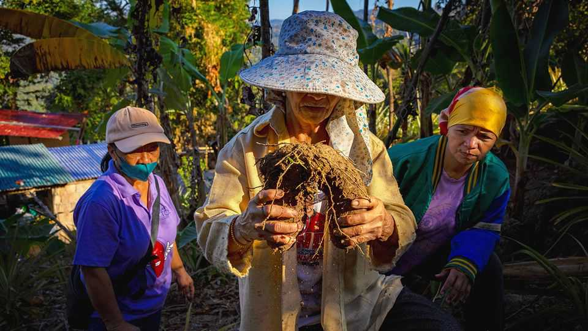

From Philippine staple to global sensation: the rise of ube
The country is struggling to keep up with soaring demand
June 18th 2026

IN KASA AND KIN, a Philippine restaurant in London, a violet glaze gleams atop a wobbling “ube tsunami cheesecake”. The sweet-toothed can also nibble ube brownies, ube ice cream and ube macarons, or sip ube margaritas. The eatery used to serve mostly Filipinos, hungry for a taste of home. Now others pour in too; sometimes just to photograph purple pastries.
Lately, ube, a yam commonly used in Philippine desserts, has exploded on Western menus. In the past year Starbucks, Costa Coffee and Pret A Manger have all rolled out ube-infused drinks across America and Europe. Its mild, earthy, nutty flavour is appealing. But it is the photogenic purple that has made the humble yam an internet sensation.
Ube (scientifically, Dioscorea alata) owes its hue to anthocyanins, antioxidants that have helped its reputation as a superfood (overlooking the sugar and alcohol it is often drenched in). Ige Ramos, a food scholar in Manila, explains that ube was a source of carbohydrates for Filipinos long before rice became a staple. After colonisation by Spain in the 16th century, ube became a dessert, halaya, from the Spanish jalea, or jelly; after the Americans took over in the late 1800s the jam was enriched with condensed milk. Halaya remains popular, and rather than the mild root itself, its sweet, creamy taste is what most Filipinos recognise as ube.
Philippine ube growers are struggling to keep up. The vines take some ten months to mature, yield just once a year, and can be wiped out by the floods or storms that lash the Philippines. It is grown on small plots by old-school methods. Competition from countries such as Vietnam and China is growing. And the market is polluted by fakes. Kyle Russell, a Filipino who lives in England, recalls ordering an “ube” cocktail, only to find it used sweet-potato powder. He laments that it is a shame how, because ube is seen as a trend, “people are trying to fabricate things to make money.”
Planting material is scarce. Propagation involves chopping tubers into chunks, which sprout a new plant. A kilo yields only a handful, and farmers must retain some to replant. The government is backing research into extracting more plantlets from a tuber. Many farmers hope for such a breakthrough. Rogel Juan, on the Philippine island of Mindanao, started growing ube in April after spotting the online craze. He says prices of ube have leapt from about 30-50 pesos a kilo a few years back to 150 ($3) today. “It’s just an ordinary plant for us,” says Mr Juan. “But now it’s like gold.”■
For exclusive coverage of Asian politics, economics and security, sign up to Asia Bulletin, our weekly subscriber-only newsletter.